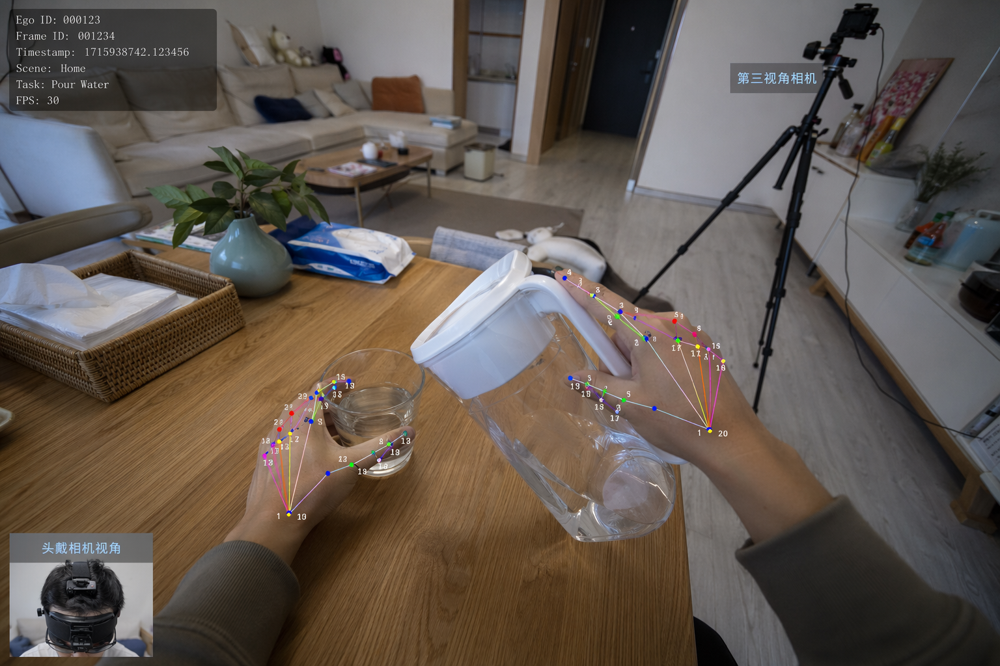
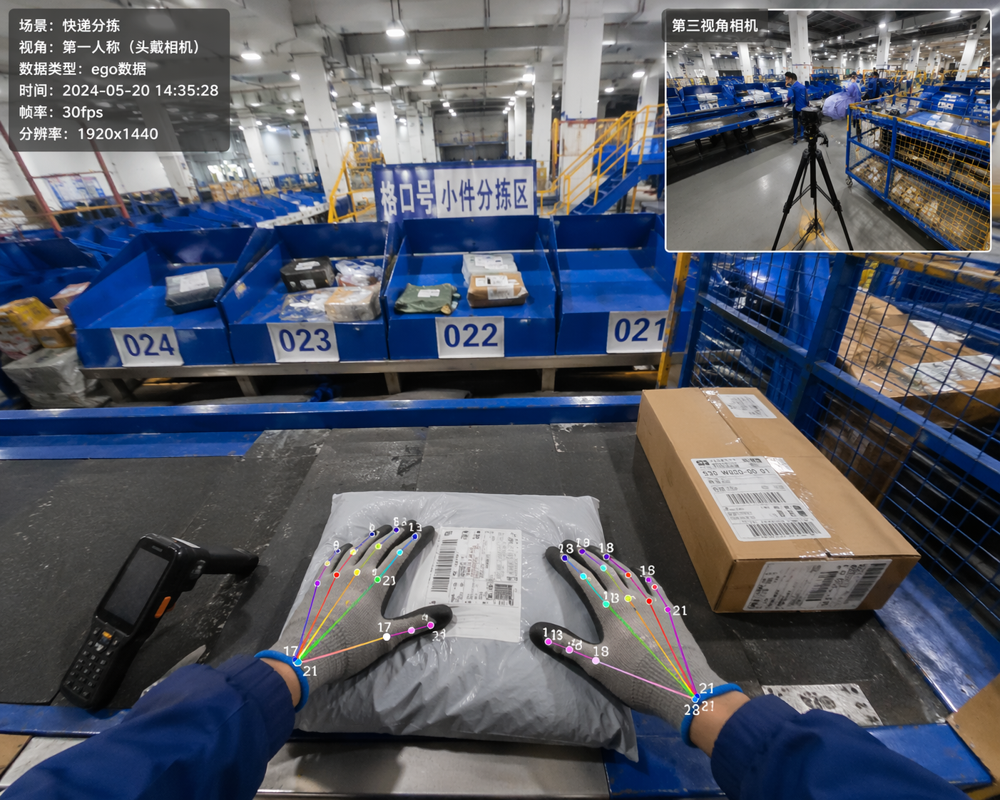
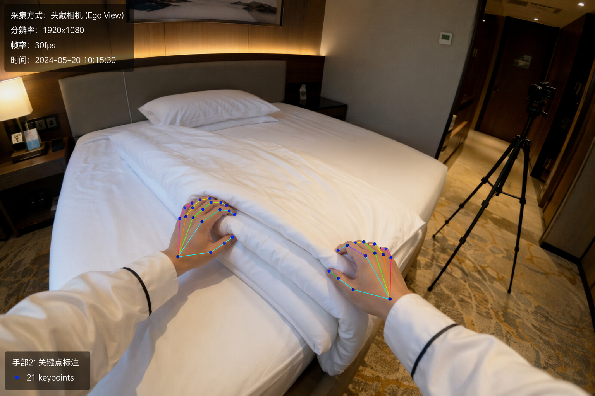

过去十年，AI 学会了思考。
下一个十年，它必须学会行动。
这场转变所需的两个前提，已在同一时点先后成熟。
● 模型已经就绪
VLA 与世界模型跨越了「可用」门槛，架构与训练范式趋于收敛。
● 本体已经就绪
人形机器人与灵巧手越过硬件可用线，量产进程加速展开。
行业的全部重量，压到了最后一块拼图上——数据。
最有力的信号：行业最强的玩家，
在造产品之前，先造数据。
这与大语言模型的演进高度同构——GPT 的瓶颈并非模型，而在于当时尚不存在的 RLHF 数据；Scale AI 将其规模化生产，奠定了 AI 的数据基座。今日的具身领域，正处于同一历史时刻。
两条路，各自撞上
同一面墙的不同侧。
巨头们验证了数据是瓶颈，却也暴露了现有路径的天花板。精度、成本、规模——三者从未被同时满足。
精度 · 公认的性能上限
自单目视频估计的手部姿态、接触时序充满噪声；EgoScale 将自身天花板明确归因于 SLAM 与手部姿态估计的误差。
成本 · 高得无法分布式
光学动捕房 2.5–10 万美元、遥操作单数据集 5–20 万美元，且绑定具体本体，无法低成本复制。
对齐 · 纯人类数据不足以收敛
EgoVerse 证明，唯有引入少量人机对齐数据，正向 scaling 方才出现——而对齐属下游后训练的小步骤。
把动捕实验室，
装进一台相机。
精度没有捷径。ReFlow 以一路第一人称视角为核心，叠加一路第三人称或 ego 双目视角，用多视角几何把重建精度推至动捕级——而硬件始终是消费级相机。
ego 视角
保证观测与机器人第一人称相机天然对齐。
第三人称 / ego 双目
提供几何约束，消解单目固有的深度歧义与自遮挡。
HandFlow 单目重建骨干
在每一路视角上提供 SOTA 手部估计，多视角融合进一步消歧。
ReFlow 要做的，是把这套实验室棚拍的标准配方，工程化为消费级、可分布式的采集。
让数据采集，
隐入真实劳动。
无需专用设备、无需专门的演示流程。采集者佩戴一路头部相机，以双手自然完成本职工作，数据采集即同步完成——捕捉真实、长尾、全手灵巧的操作分布。
手持式无本体采集（UMI 等）
- 需手持专用夹爪设备完成示范
- 采集是独立于真实工作的专门活动
- 夹爪为末端执行器形态，仅记录夹爪式抓取
- 产能受限于专门付费的演示工时
ReFlow · 采集即劳动
- 仅一路头部相机（必要时加一路第三人称）
- 采集寄生于已经发生的真实劳动之上
- 双手自然操作，捕捉全手灵巧 + 真实分布
- 边际成本趋近于零，规模可分布式复制

家庭家务
真实家庭环境覆盖最广的日常操作技能，是预训练最稀缺的覆盖度来源。

快递分拣
分拣作业天然高频、长尾、贴近真实交互分布，可直接合作部署、规模化采集。

酒店家政
保洁阿姨只需头戴相机照常打扫——工作完成的同时，数据也已采集完毕。
而把与具体本体的对齐，留给下游少量真机后训练。 数据天然跨本体、可被任意客户复用。
两类本体，
两种物理上不同的数据。
Ego 手部操作
| 目标本体 | 双臂机器人 / 灵巧手 |
| 采集形态 | ego + 第三人称 / ego 双目 |
| 核心数据 | ego 观测 + 手部 21 关键点 / 腕部 6DoF |
| 能力依托 | HandFlow 单目手部 SOTA 重建 |
| 验证 | EgoScale 已证 scaling，链路短、拉力近 |
全身人形
| 目标本体 | 人形机器人 |
| 采集形态 | 多视角（全身）+ 一路 ego（观测） |
| 核心数据 | 全身姿态 + 手部 + ego 观测 |
| 能力依托 | 多视角全身重建（团队 3D 积累拓展） |
| 稀缺度 | loco-manipulation 数据为公认空白 |
DaaS + 平台，双轮驱动。
轮一 · DaaS 数据即服务
- 标准化人类动作数据集授权（按场景 / 任务 / 精度分层）
- 定制化采集：按客户场景与任务规格快速交付
轮二 · 平台工具链
- 客户在自有环境部署采集 / 标注 / 质检工具链
- 平台托管算法、流水线、版本管理，占据数据生产入口
数据越多 → 估计器越准 → 边际标注成本越低 → 场景覆盖越广 → 客户越多 → 数据再度扩大。先转起这条飞轮的人，形成结构性的长期领先。
这并非空中楼阁。
ReFlow 的核心能力，建立在团队已发表与在投的两项研究之上，恰好覆盖动捕级精度与人-物交互理解两大支点。
HandFlow：生成式 4D 手部重建
基于 MANO 参数空间的 flow-matching，由单目视频重建 4D 手部姿态。在 DexYCB、HOT3D 上于重建精度与时序平滑度大幅领先 HaMeR、HaWoR。
OVA-Fields：开放词汇可操作部件检测
面向真实场景的弱监督 affordance 检测，将自然语言指令映射到 3D 场景中的可操作部件，验证「感知 → 人物交互 → 真机操作」的完整闭环。
如何用人类数据，
长出具身大脑。
沿用已被验证的「预训练 → 对齐 → 后训练」范式：以海量 ReFlow 动捕级人类数据习得可泛化的世界与动作表征，再以少量真机数据完成本体对齐——规模与本体解耦。
大规模预训练
以 ReFlow 动捕级人类动作数据为底座，学习接触丰富的人-物交互与长程操作先验。覆盖度与多样性来自人类的自然作业。
ReFlow 人类数据人-机对齐 · mid-training
引入少量人-机配对数据，将人类先验落地为可执行控制，解耦「数据规模」与「本体对齐」两件事。
少量真机数据本体后训练
面向双臂、灵巧手或人形机器人，以极少示范完成跨本体迁移，部署到客户的具体本体。
客户本体动作表征
腕部相对 6DoF + 手部 21 关键点关节角 + 接触时序。关节空间监督在精细操作上远胜「仅腕部」（EgoScale 结论）。
为何人类数据预训练有效
HumanScale 已证：同等规模下，人类视频预训练优于真机数据——验证损失更低、泛化更强，且随规模持续提升。
可度量的有效性
预训练验证损失与真机操作成功率强相关（EgoScale，R²=0.998）：数据质量即模型性能，可由 scaling 曲线直接证明。
再让被证明的数据，把基模推向下一代具身大脑。
先做数据基座，
再用数据，长出具身大脑。
数据基座
以消费级硬件规模化生产动捕级人类动作数据，成为整个具身行业绕不开的数据层入口。
验证模型
用自有数据训练参考策略、复现 scaling 曲线，直接证明「以 ReFlow 数据训练的策略，性能显著更优」。
具身大脑
当数据规模到达临界，以最大、最具壁垒的专有数据，垂直整合出具身基础模型。
数据是护城河，大脑是终局。
我们用自己的数据，证明数据的价值。